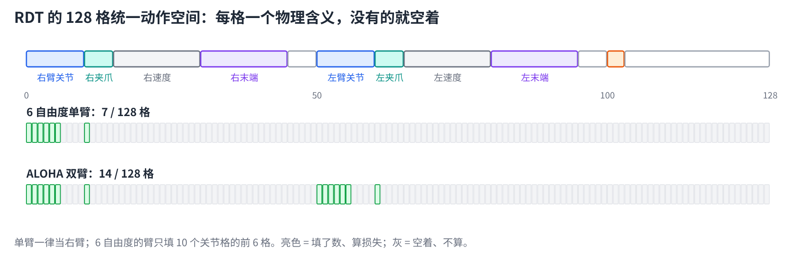
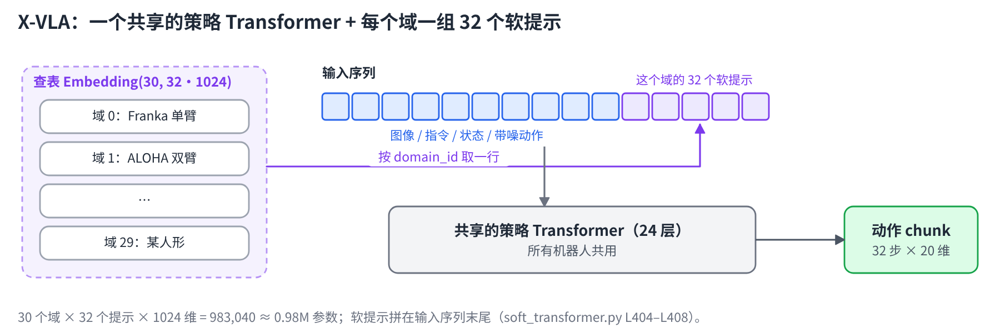
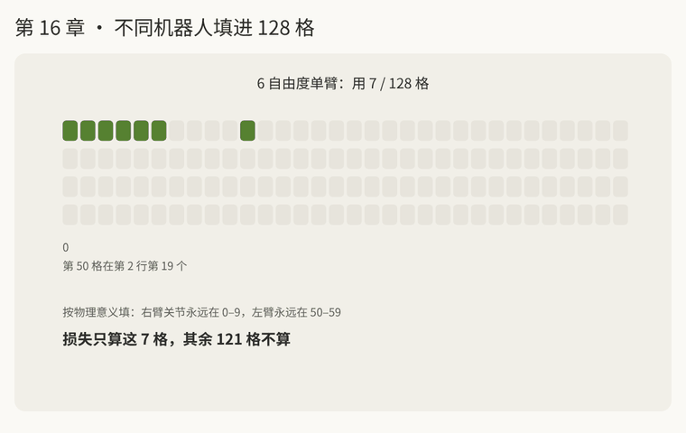

第 16 章 · 跨本体：不同的机器人，怎么排进同一张动作表
本地运行
git clone https://github.com/wikieden/vla-from-scratch
cd vla-from-scratch/code/notebooks
pip install jupyterlab torch numpy
jupyter lab ch16_cross_embodiment.ipynb也可以下载后直接用 VS Code 打开 .ipynb 运行。需要 GPU 的章节在 Colab 里选「代码执行程序 → 更改运行时类型 → GPU」。
本章回答：单臂 7 个数、双臂 14 个数、人形几十个数，怎么放进同一个模型一起训？为什么要"按物理意义填格子"，而不是把数从头往后排？X-VLA 给每种机器人配的那 32 个"软提示"是什么？
讲解日期：2026-11-24 · 上一章：第 15 章 OpenVLA-OFT · 下一章：第 17 章 在线 RL
对应原文：materials/text/papers/open-x-embodiment-2310.08864.txt（OXE）L65、L268、L283–L307；rdt-1b-2410.07864.txt（RDT）摘要 L28–L33、§4.2 L456–L476、附录 C 表 4 L1258–L1300；X-VLA 代码materials/code/lerobot/repo/src/lerobot/policies/xvla/（configuration_xvla.pyL80–L130、action_hub.pyL113–L130、soft_transformer.pyL310–L345、L403–L408）
本章缩写：OXE = Open X-Embodiment（开放 / 跨 / 本体数据集）；RDT = Robotics Diffusion Transformer（机器人 / 扩散 / Transformer）；DoF = Degrees of Freedom（自由度）；EEF = End-Effector（末端执行器，手）；ee6d = end-effector + 6D rotation（末端位置 + 6D 旋转表示）；BCE = Binary Cross-Entropy（二元 / 交叉 / 熵）；X-VLA = Extended VLA（扩展 VLA）。全表见 appendix-glossary.md
讲解
第 1 步：问题，数据分散在几十种机器人上（2026-11-24）
类比：各国的插座。 每个国家的插座形状不同，电器带不出国。要么每个国家造一套电器，要么做一个万能插座，每个插孔都标好"这是火线、这是地线"。
为什么一定要跨本体：单一实验室录的示范只有几百到几万条，而网上的图文有几十亿。把各家的机器人数据合起来，才有规模：
| 数据集 | 规模 | 本体 | 原文 |
|---|---|---|---|
| OXE | 1M+ 条轨迹、60 个数据集、527 种技能 | 22 种 | OXE L65、L268、L283–L307 |
| RDT 预训练集 | 46 个数据集、1M+ 条轨迹、21 TB | 几乎所有带夹爪的机械臂 | RDT L475–L476 |
难点：每种机器人的动作向量长度不同、每一位的含义也不同：
| 机器人 | 动作向量 | 长度 |
|---|---|---|
| 第 1 章的单臂（末端增量） | Δx, Δy, Δz, Δroll, Δpitch, Δyaw, 夹爪 | 7 |
| 6 自由度单臂（关节位置） | 6 个关节角 + 夹爪 | 7 |
| ALOHA 双臂（关节位置） | 左右各 6 个关节 + 各 1 个夹爪 | 14 |
同样是第 3 位：第一种是"往上挪多少"，第二种是"第 3 个关节转到几度"。直接拼在一起训，模型会把两件事当成一件事。
一句话：数据要合起来才够多，但每种机器人的动作"插头"不一样。
第 2 步：按物理意义填格子（RDT 的 128 维统一空间）（2026-11-24）
类比：标准化的报税表。 每个人的收入来源不同，但表上每一栏都写好了"工资""利息""房租"。你没有的那一栏就空着，不会把房租填进工资栏。
RDT 的做法（L459–L473，附录 C 表 4）：设计一张 128 格的表，每格都有固定的物理含义；每种机器人把自己的数按含义填进对应的格子，其余格子空着（padding）：
| 格子 | 含义 |
|---|---|
| 0–9 | 右臂关节位置 |
| 10–14 | 右夹爪关节位置 |
| 15–24 / 25–29 | 右臂关节速度 / 右夹爪速度 |
| 30–32 / 33–38 | 右手末端位置 / 6D 姿态 |
| 39–44 | 右手末端线速度、角速度 |
| 50–99 | 左臂，同样的布局 |
| 100–102 | 底盘线速度、角速度 |
| 45–49、95–99、103–127 | 预留 |
规则（表 4 注）：单臂一律当"右臂"；6 自由度的臂只填 10 个关节格里的前 6 个。
例：
| 机器人 | 填进哪几格 | 用了几格 |
|---|---|---|
| 6 自由度单臂 + 夹爪 | 0–5、10 | 7 / 128 |
| ALOHA（左右各 6 关节 + 夹爪） | 0–5、10；50–55、60 | 14 / 128 |
为什么不从头往后排？ 如果单臂的 7 个数填 0–6、ALOHA 的 14 个数填 0–13，那第 7 格在 ALOHA 上是"左臂第 1 个关节"，在别的机器人上是"右夹爪"，同一个输出位置要学两种意思。按物理意义填，"右臂第 1 个关节"永远在第 0 格，不同机器人的数据在同一格上互相帮忙（L461–L463："each dimension of the space should have a clear physical meaning"）。
空着的格子怎么办：训练时只在填了数的格子上算损失（掩码），空格不算对错；输出时也只取有用的格子。

图 16-1 · 单臂和 ALOHA 填进同一张表：右臂关节永远在 0–9 格，左臂永远在 50–59 格。
一句话：每格固定一个物理含义，没有的就空着、不算损失。
第 3 步：每种机器人一组软提示（X-VLA）（2026-11-24）
类比：给翻译员一张"这位客人是哪国人"的小纸条。 翻译员（共享的模型）是同一个，但纸条告诉他这次面对的是哪种口音。
统一的表解决了"格子对不上"，但不同机器人的相机位置、控制频率、动作尺度还是不一样。X-VLA 的做法：给每个数据域（domain，一种机器人 + 一种设置）准备一组可学习的向量，叫软提示（soft prompt），拼在输入 token 序列的末尾，和其余 token 一起过 Transformer：
- 默认 30 个域，每个域 32 个软提示 token，每个 1024 维（
configuration_xvla.py：num_domains = 30、len_soft_prompts = 32、hidden_size = 1024）； - 实现就是一张查表：
nn.Embedding(num_domains, len_soft_prompts * hidden_size)（soft_transformer.pyL344）； - 默认冻住 VLM 编码器，只训策略 Transformer 和软提示（
train_soft_prompts = True，L135–L139）。
参数量：
不到一百万个数，就能让一个共享模型分清 30 种机器人。新来一种机器人，只要加一行、训这一行。
X-VLA 的动作表：它用的是末端空间的 20 维 ee6d（action_hub.py L113–L130）：
| 位置 | 含义 |
|---|---|
| 0–2 / 10–12 | 两只手的 xyz |
| 3–8 / 13–18 | 两只手的 6D 旋转 |
| 9 / 19 | 两个夹爪 |
损失分三项（action_hub.py L133–L158）：位置和 6D 旋转用均方误差，分别乘 500 和 10；夹爪开合用二分类交叉熵（BCE = Binary Cross-Entropy：二元 / 交叉 / 熵），乘 1。位置以米计、误差很小，不放大就几乎没有梯度。
为什么用 6D 旋转：旋转矩阵的前两列（6 个数），模型输出后用 Gram–Schmidt 正交化补出第三列。它是连续的，不像欧拉角在 ±180° 处跳变（见《数学与实验统计》第 18 章 旋转与 SE(3)）。
场景代码：LeRobot 里 X-VLA 软提示的真实写法（soft_transformer.py，节选）：
# 每个 domain 一行：32 个软提示 × 1024 维
self.soft_prompt_hub = nn.Embedding(num_domains, len_soft_prompts * hidden_size)
soft_prompts = self.soft_prompt_hub(domain_id).view(
batch_size, self.len_soft_prompts, self.hidden_size
) # (B, 32, 1024)：查出这个域的那一行
x = torch.cat([x, soft_prompts], dim=1) # 拼在输入 token 后面（L404–L408）

图 16-2 · 同一个策略 Transformer；输入序列末尾拼上"这是哪种机器人"的 32 个向量。
一句话：共享模型 + 每种机器人一张小纸条，纸条不到一百万个参数。
动画演示：同一张表，不同的机器人

可交互版：animations/16-cross-embodiment.html（下拉：机器人类型；勾选：从头往后排 / 按物理意义填）。
怎么看：
- 128 个小格是 RDT 的统一表，彩色是填了数的格子，灰色是空着的（第 2 步）；
- 下面写出用了几格、哪几格算损失；
- 切到"从头往后排"，同一格在不同机器人上会标出不同含义（红色），这就是第 2 步说的"一格两义"；
- 播放：6 自由度单臂 → 7 自由度单臂 → ALOHA → 带底盘的双臂 → 切到从头往后排。
练习与作答记录
题 1（第 2 步）：一个 7 自由度单臂 + 一个夹爪，装在能前后走、能原地转的底盘上。按 RDT 的表，它的动作填进哪几格？一共用几格？占 128 格的百分之几？
作答记录：（待作答）
题 2（第 3 步）：如果有 50 个域、每个域 16 个软提示、隐藏维 768，软提示一共多少参数？和第 3 步的 0.98M 比是多还是少？
作答记录：（待作答）
题 3（第 2 步）：有人说"空着的格子填 0 就行，不用掩码"。如果损失也算在这些格子上，模型会学到什么奇怪的东西？
作答记录：（待作答）
口诀
插座各国不一样，万能插座每孔标名；
报税表每栏一义，没有的就空着不算分；
翻译员是同一个，纸条说明是哪国人。
本章复习卡片
V39（RDT 128 维统一空间：按物理意义填格、单臂当右臂、掩码算损失）、V40（X-VLA 软提示 30 × 32 × 1024 ≈ 0.98M；ee6d 20 维与 6D 旋转）。练习做完后，按答错、卡住的地方再补。
附录 · 延伸阅读
留给以后深入学习用，不影响本章主线。★ 是建议先读的。
推荐阅读
| 读什么 | 读哪里 | 读它为了什么 |
|---|---|---|
| ★ RDT-1B（Liu 等，2024） | rdt-1b-2410.07864.txt §4.2 L456–L476、附录 C L1258–L1300 |
统一动作空间的原文 |
| Open X-Embodiment（2023） | open-x-embodiment-2310.08864.txt L268–L307 |
跨本体数据的规模和来源 |
| X-VLA 的 LeRobot 实现 | lerobot/policies/xvla/ 三个文件 |
软提示、ee6d 布局、损失权重 |
| GR00T N1 | gr00t-n1-2503.14734.txt（每个本体一组编解码器） |
另一种跨本体办法，见第 10 章 |
| 《数学与实验统计》第 18 章 | 6D 旋转、Gram–Schmidt | 为什么不用欧拉角 |
| 第 21 章 2026 开源 VLA | Wall-OSS 26 维、LingBot 55 维 | 各家的"万能插座"有多大 |
数学原理
- 掩码损失：\(\mathcal{L} = \frac{\sum_i m_i (\hat a_i - a_i)^2}{\sum_i m_i}\)，\(m_i = 1\) 表示这一格有数；空格 \(m_i = 0\)，不贡献梯度。
- 6D 旋转恢复：取两列 \(a_1, a_2\)，\(b_1 = a_1/\lVert a_1\rVert\)，\(b_2 = \mathrm{normalize}(a_2 - (b_1\cdot a_2)b_1)\)，\(b_3 = b_1 \times b_2\)。
- 查表 = 独热向量乘矩阵：
nn.Embedding(n, d)等于一个 n × d 的矩阵，取第 domain_id 行。
公式清单
| 公式 | 意思 |
|---|---|
| 用格比例 \(=\) 填了的格数 \(/ 128\) | 一种机器人占统一表的多少 |
| \(\mathcal{L} = \sum m_i(\hat a_i - a_i)^2 / \sum m_i\) | 只在有数的格子上算损失 |
| 软提示参数 \(=\) 域数 \(\times\) 提示长度 \(\times\) 隐藏维 | X-VLA 的"纸条"有多大 |
| \(b_3 = b_1 \times b_2\) | 6D 表示补出旋转矩阵第三列 |
代码对照：把本章的数字用代码算一遍
纯 Python + NumPy。代码在仓库本地
vla-deep-dive/solutions/chapter-code/ch16_cross_embodiment.py，配套测试tests/test_ch16.py：
bash cd vla-deep-dive/solutions/chapter-code uv run python ch16_cross_embodiment.py uv run pytest tests/test_ch16.py
讲义 ↔ 代码：
| 讲义 | 写法 | 跑出来 |
|---|---|---|
| 第 2 步 | unified_slots(robot)、fill_unified(values, robot) |
单臂 7 / 128 格（0–5、10）；ALOHA 14 / 128 格 |
| 第 2 步 | masked_mse(pred, target, mask) |
空格不算损失 |
| 第 3 步 | soft_prompt_params(30, 32, 1024) |
983,040 |
| 第 3 步 | rot6d_to_matrix(x) |
正交矩阵，行列式 = 1 |
代码里才看得到的 3 件事：
fill_unified返回值和掩码两个数组；掩码和值必须一起传给损失，只传值就等于"空格填 0 也算分"。rot6d_to_matrix输入的两列不必正交，代码先归一化再减投影；输出的三列两两点积为 0。- RDT 表里格子是左闭右开（[0, 10) 是 0–9），代码按 Python 的
range写，正好对上。
自己改一改（不影响练习答案）：
- 给
unified_slots加一种"7 自由度双臂 + 底盘"的机器人，数一数用了几格。 - 把
masked_mse的掩码全设成 1，比较空格填 0 时损失变成多少。 - 给
rot6d_to_matrix喂两列平行的向量，看会发生什么（Gram–Schmidt 什么时候失效）。